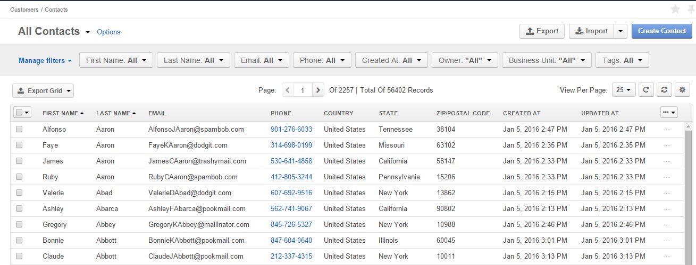
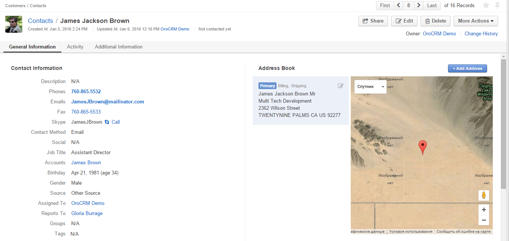

The customer relationship management process requires us to collect and process huge amounts of information. OroCRM is
designed to do this in the most efficient and convenient way possible.
The system organizes information according to Entities, Records, and Properties. An Entity is a collection
of similar information. Each instance of this collection is called a Record. Details of each record are its
Properties.
So, information about customers of an online store is collected as properties of the records of the Web Customer entity.
This means that one of the OroCRM entities is “Web Customer” and the system knows that records of this entity can have a
number of properties, such as the first name, last name, email, phone number, ID of the shipping address, ID of the
cart, and ID’s of the orders. The system is also aware that some of these properties need to be defined while some are
optional. When a new customer is added to the system, their record is created and values of the properties are saved
for it. If the information has changed (e.g., the phone number), the properties are updated.
New records can be created and the existing record can be updated both manually and automatically
(as a result of integration with third-party systems).
As soon as a property has been updated, all the system users who have access permission will see its new updated state.
This ensures that all the stakeholders can obtain actual and up-to-date information at any moment.
How Entities Can Be Related
Some pieces of information are complex enough to have their own entity. For example, for each cart in an online store,
we need to know its unique ID (number), how many items are in the cart, what their total value is, and whether a
purchase has been made. Therefore, we have an entity called “Cart”, which will contain records that will have all of
these properties: ID, number of items, total value, and status.
One customer may have several carts. In OroCRM, this means that Web Customer records can be related to many different
Carts records. To show this, we assign one of the Web Customer properties as a “relation” to carts. This field will
save an identifier of the customer’s carts (such as a field of the cart). Using this identifier, the system can find
the cart and bind its properties to the customer.
Moreover, each cart may have several
items in it. This means that each Cart record is related to its Item records as one to many.
User-wise, this means that you can easily get a full picture and drill-down into details as much as required for any
specific task, as well as update the process with the provided data.
See All the Records of a Kind on Grids
A grid is an aggregated view of all the records of the same entity. Each row of a grid contains one record, and each
column contains one of the grid properties.
For example, you can open a grid of all the Contacts. (The Contact records represent actual people you are dealing with
and contains properties such as personal information, details of their position in the customer-company, contact
details, etc. The contacts may be related to a customer, an opportunity, or any other record in the system, if
applicable.)
So, we have opened the “All Contacts” grid.

We immediately see some major details of our contacts, such as their first and last names, email, phone number, etc.
You can adjust and save grid views, updated and delete grid records, get to the Edit and View pages of any grid record,
and even export all the data in the grid as a .csv file.
The grid details are described in the Grids guide.
View Details of a Specific Record
To see more details of a specific record, and to work directly with the record (create a task related to a customer,
appoint a calendar event for a user, turn a cart into an order, share a contact and so on), you need to get to its
View page.
For example, we have opened the View page of one of our Contacts.

On the View page, you can see all the details of a record and the location of its address on the map. You can click the
phone number link to call it via Hangouts or log a call, start writing an email by clicking on its address, or initiate
a Skype session directly from the View page. If there is a related entity, its identifier will be a link to the View
page of this entity.
Action buttons at the top of each View page reflect the actions that you can do with the record.
The View Page details are described in the View Pages guide.
Create New Records and Edit Existing Records
To change the details of an existing record or to create a new record, you need to (re)define the record properties on
its Create/Edit form.
The Create/Edit form details are described in the Create a New Record and Edit the Record Details Pages
guide.
Tag the Records
In order to give system users additional information about a record, as well as to systematize records and mark them for
future usage (e.g., to select them for reports or create segments), you can assign them existing or new tags. For
example, if you tag a customer as “VIP,” this will let the other system users know about the customer’s importance. You
can then adjust the report to show only data for your VIPs and make targeted mailings to them. Moreover, you can find a
record by its tag with the search functionality.
Use Workflows to Define Processes
The process of working with customers is ongoing: carts turn into orders, potential opportunities either fizzle or
turn into successful deals, and so on. OroCRM reflects these and other processes by changing record properties and
sometimes creating new relations. (For example, when a new lead appears and then turns successful, it gets bound to some
contact, some opportunity, and some customer).
In many cases, the success of a business depends on the unity of its procedures and how closely its employees follow
them throughout the company. For example, most companies won’t allow their employees to close a cart without contacting
the potential customer, but no one wants to annoy customers with duplicate calls. Likewise, each customer complaint has
to be researched and responded to, and potential big contracts require specific negotiations before they turn into
either a successful deal or a lost chance.
In order to regulate this, workflows can be created in OroCRM. Workflow defines what transitions (changes of
properties) are available to the system users at each step.
You can find more details about workflows in the Workflows guide.
Integrate with Third-Party Systems
OroCRM can easily integrate with third-party systems, letting users transfer the data into another application,
and vice versa. For example, the users can upload OroCRM data into a third-party program, edit it, then transfer that
data back into OroCRM. Likewise, data can also be transferred into OroCRM from another application, processed, then
transferred back.
For example, integrating with ldap lets you load user records to OroCRM, integrating with Magento lets you load customer
records from a Magento store into OroCRM, and integrating with MailChimp lets you load OroCRM contact details into
MailChimp, as well as get the results of an email campaign within OroCRM.
Integrations are created by the system administrator.
Import and Export Data
Another way to add records to OroCRM is to export it from a .csv file. These can consist of customer details,
information about your leads and opportunities, contact information, and other data.
You can also export data from OroCRM into a .csv file. You can export all the records of one entity, as well as all the
records available on a specific grid.
Step-by-step instructions for the import and export actions are provided in the
Import and Export Functionality guide.
Conclusion
Changing record properties in OroCRM reflects the processes that make up customer relationships. Users can add new
records to OroCRM one by one, either with .csv files or with integrations. The way in which records are processed can
be limited using record types (entities) or with workflows, and all the changes can be tracked with the data audit
tools. Details of the record can be easily viewed and updated in OroCRM, and as soon as there has been a change, other
users will see the updated information. Throughout, stakeholders of customer relationships can access record
details in order to make their work more efficient.